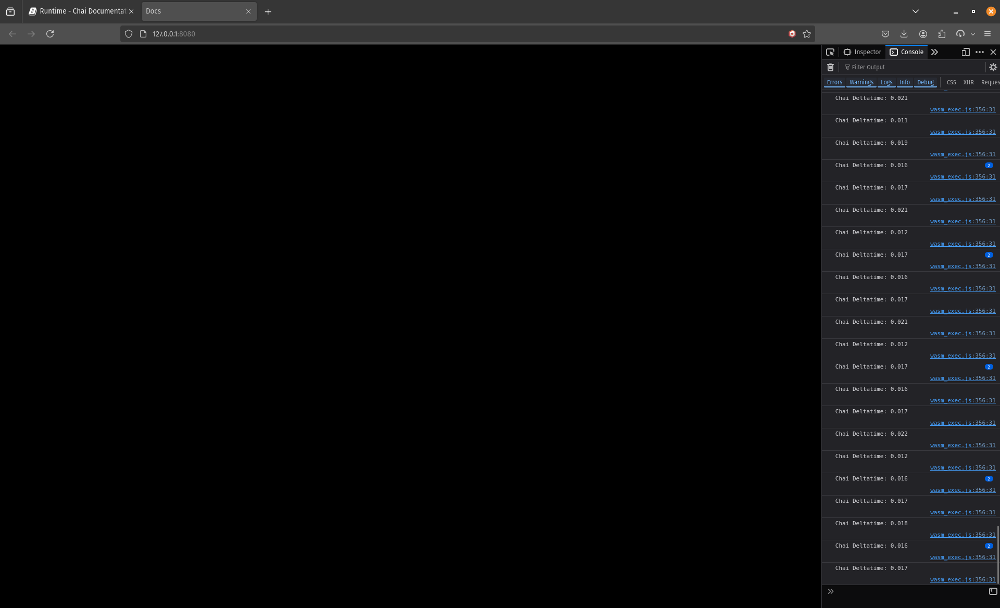

Runtime
Runtime is the concept of the Scene's run cycle, The Scene starts with "Start" Then it goes into cycling between "Update" and "Draw" every frame.
There are 3 different Runtime:
- Start
- Update
- Draw
Start
Start is called only once, At the start of the scene. It's useful for setting up the scene and creating Entities and Components.
Adding A Start Runtime System
func CustomSystem(_this_scene *chai.Scene) {
}
OnStart: func(){
_test_scene := chai.NewScene()
_test_scene.NewStartSystem(CustomSystem)
}
The first code is how you make a Start Runtime System. You just create a normal function and as a parameter you give a pointer of the scene this system will running on.
import (
chai "github.com/mhamedGd/chai"
)
func CustomSystem(_this_scene *chai.Scene) {
chai.LogF("Chai!!")
}
var app chai.App = chai.App{
Title: "Docs",
Width: 480,
Height: 480,
OnStart: func(){
_test_scene := chai.NewScene()
_test_scene.NewStartSystem(CustomSystem)
// Transition into this scene
chai.ChangeScene(&_test_scene)
},
}
func main(){
chai.Run(&app)
}
Try then to run it "make run", Now the Output Should be like this.
You can Access the Console with (Ctrl/Cmd + L.Shift + C)
Update
Update just like Start is a runtime of Scene, but unlike Start it runs for every frame after Start, It's useful for game logic,
Adding An Update Runtime System
func CustomUpdateSystem(_this_scene *chai.Scene, _dt float32) {
}
OnStart: func(){
_test_scene := chai.NewScene()
_test_scene.NewUpdateSystem(CustomUpdateSystem)
}
Notice how here the Update Runtime System takes 2 parameters, not 1. The first is a reference to the Scene the System is running on, While the Second is the delta-time of the updated frame.
import (
chai "github.com/mhamedGd/chai"
)
func CustomUpdateSystem(_this_scene *chai.Scene, _dt float32) {
chai.LogF("Chai Deltatime: %v", _dt)
}
var app chai.App = chai.App{
Title: "Docs",
Width: 480,
Height: 480,
OnStart: func(){
_test_scene := chai.NewScene()
_test_scene.NewUpdateSystem(CustomUpdateSystem)
// Transition into this scene
chai.ChangeScene(&_test_scene)
},
}
func main(){
chai.Run(&app)
}
Try it now with "make run"

Draw
Draw is almost exactly the same as Update, the Difference is that it runs after Update in the Scene Life Cycle.